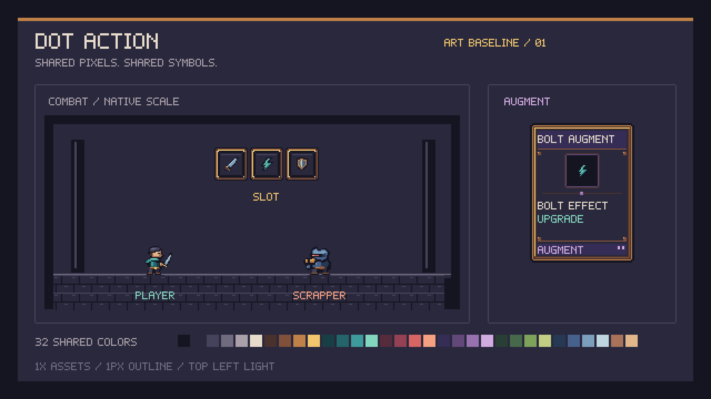
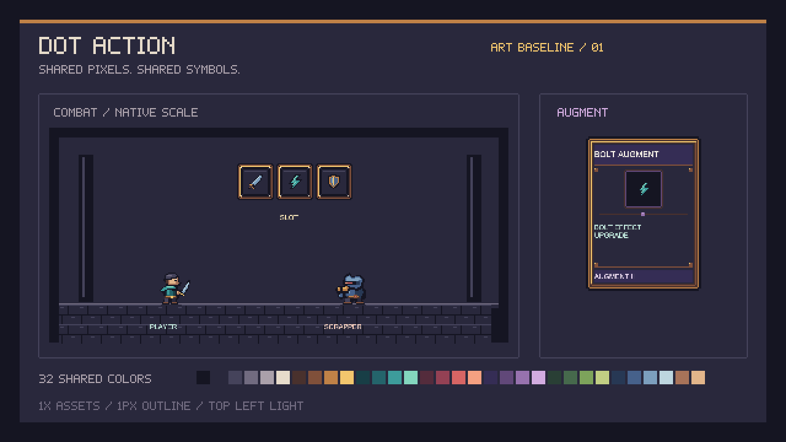

Tracefolio REPORTS & ISSUES
Tracefolio REPORTS & ISSUES DotAction작업 결과
DotAction작업 결과Aseprite 기준 아트 8종 제작과 Unity 2D 프로젝트 시작
부분 완료실제 Aseprite로 정적 원본 8종과 비교 화면을 만들고 Unity 6000.0.83f1의 URP 2D 씬에 연결했습니다.
작업 결과

플레이어·적·검/번개/방패 심벌·슬롯 셀·카드 프레임·바닥 타일의 정적 원본을 실제 Aseprite로 제작했습니다. 원본은 32색 팔레트와 1px 외곽선을 공유하며 슬롯과 카드는 동일 심벌을 사용합니다. 아트는 제작자 확인을 마친 draft이며 사용자 최종 승인은 대기입니다.
Unity 6000.0.83f1 / URP 2D 프로젝트를 구성하고 개별 SpriteRenderer와 편집 가능한 카드 TextMesh를 ArtReference 씬에 저장했습니다. 씬 재열기와 실제 Play Mode 렌더를 수행했습니다. 이는 게임 동작 구현 완료를 뜻하지 않습니다.
원본에서 게임 씬으로 연결
flowchart LR A[Aseprite 원본과 32색] --> B[PNG 출력] B --> C[Sync-Art로 Unity 사본 갱신] C --> D[Point와 PPU16 가져오기] D --> E[씬에 개별 자산 저장] E --> F[Play Mode 실제 렌더]
변경 전후

두 이미지는 같은 1280×720 카메라 렌더입니다. 신규 아트에는 기존 그림이 없어 원본 그림의 전 화면은 존재하지 않으며, 문서 시안을 실행 화면으로 제시하지 않았습니다.
변경 내용
적용 내용
원본·출력·Unity 사본을 분리하고 기존 .meta를 보존합니다. Runtime·Editor 어셈블리를 분리했으며 본체는 기준 샘플에 의존하지 않습니다. 샘플의 네이밍·어셈블리·정적 UI 저장 규칙을 실제 코드와 문서로 확인했습니다.
픽셀 아트 가져오기 전체 구현
using UnityEditor;
using UnityEngine;
namespace DotAction.Editor
{
/// <summary>프로젝트 소유 픽셀 아트를 압축·필터링 없이 가져옵니다.</summary>
public sealed class PixelArtImporter : AssetPostprocessor
{
private void OnPreprocessTexture()
{
if (!assetPath.StartsWith("Assets/DotAction/Art/"))
{
return;
}
TextureImporter importer = (TextureImporter)assetImporter;
importer.textureType = TextureImporterType.Sprite;
importer.spriteImportMode = assetPath.StartsWith("Assets/DotAction/Art/sprite-studio/")
? SpriteImportMode.Multiple
: SpriteImportMode.Single;
importer.spritePixelsPerUnit = 16;
importer.filterMode = FilterMode.Point;
importer.textureCompression = TextureImporterCompression.Uncompressed;
importer.mipmapEnabled = false;
importer.alphaIsTransparency = true;
importer.npotScale = TextureImporterNPOTScale.None;
importer.maxTextureSize = 4096;
importer.wrapMode = TextureWrapMode.Clamp;
importer.sRGBTexture = true;
}
}
}
개별 스프라이트 배치 전체 메서드
private static void AddSprite(string name, string relativePath, int x, int y, int width, int height, int order)
{
Sprite sprite = AssetDatabase.LoadAssetAtPath<Sprite>("Assets/DotAction/Art/" + relativePath);
if (sprite == null)
{
throw new FileNotFoundException("필수 아트가 없습니다: " + relativePath);
}
GameObject item = new GameObject(name, typeof(SpriteRenderer));
item.transform.position = new Vector3((x + width * 0.5f - 320) / PIXELS_PER_UNIT,
(180 - y - height * 0.5f) / PIXELS_PER_UNIT, 0);
SpriteRenderer renderer = item.GetComponent<SpriteRenderer>();
renderer.sprite = sprite;
renderer.sortingOrder = order;
Directory.CreateDirectory("Assets/DotAction/Materials");
string materialPath = "Assets/DotAction/Materials/" + sprite.name + ".mat";
Material material = AssetDatabase.LoadAssetAtPath<Material>(materialPath);
if (material == null)
{
material = new Material(Shader.Find("Universal Render Pipeline/2D/Sprite-Unlit-Default"));
material.mainTexture = sprite.texture;
AssetDatabase.CreateAsset(material, materialPath);
}
renderer.sharedMaterial = material;
}
전체 씬 구성 코드 · 실제 Aseprite 제작 코드 전체
대화 기록
사용자는 실제 Aseprite 기준 세트 제작·스타일 비교를 요청하고, 같은 폴더의 Unity 프로젝트 세팅을 추가로 요청했습니다. 작업 중 추가된 TurnRoom·polyperfect는 사용자가 의도한 추가라고 확인하여 그대로 보존했습니다.
전역 지침은 변경하지 않았습니다. 검증된 프로젝트별 규칙은 전용 지침에 기록했고, 제품 고유 아트 배치이므로 Unity 샘플 저장소 환류는 보류했습니다.
검증
Aseprite 1.3.18.6-dev를 공식 v1.3.18.6 소스와 공식 Skia로 로컬 빌드했습니다. 기존 설치는 조사한 경로에서 발견되지 않았습니다. 빌드 도구는 프로젝트 내부 .tools에 두고 배포 대상에서 제외했습니다.
원본 8종과 비교 원본을 실제 Aseprite로 재열어 modified=false를 확인했습니다. PNG 크기, 32색 이탈 없음, 알파 0/255, 심벌 2px 여백을 확인했습니다. 검증 데이터 · 원본 재열기 기록 · 검증 코드
Unity 초기 컴파일에서 URP 2D 어셈블리 참조 누락을 수정했습니다. 첫 캡처의 잘못된 텍스처 표시는 명시적 Unlit 머티리얼 연결 후 재확인했습니다. 작은 카드 라벨도 실제 화면을 보며 크기를 수정했습니다. 씬은 저장·재열기 후 Play Mode 렌더로 확인했습니다. 첨부된 실제 렌더는 카드 제목 0.13, 나머지 라벨 0.11일 때의 화면입니다. 이후 가독성 개선을 위해 저장 씬의 글자 크기를 0.18로 조정했으나, 다른 작업의 동일 프로젝트 배치 실행과 라이선스 대기로 마지막 크기의 렌더 재확인은 미완료입니다. 자동 테스트는 작성·실행하지 않았습니다.
실제 씬 캡처 전체 메서드
private static void CaptureCamera(string outputPath)
{
Camera camera = Camera.main;
RenderTexture target = new RenderTexture(1280, 720, 24);
UniversalRenderPipeline.SingleCameraRequest request = new UniversalRenderPipeline.SingleCameraRequest();
request.destination = target;
RenderPipeline.SubmitRenderRequest(camera, request);
RenderTexture previous = RenderTexture.active;
RenderTexture.active = target;
Texture2D image = new Texture2D(1280, 720, TextureFormat.RGBA32, false);
image.ReadPixels(new Rect(0, 0, 1280, 720), 0, 0);
image.Apply();
Directory.CreateDirectory("art/previews");
File.WriteAllBytes(outputPath, image.EncodeToPNG());
RenderTexture.active = previous;
camera.targetTexture = null;
UnityEngine.Object.DestroyImmediate(image);
UnityEngine.Object.DestroyImmediate(target);
Scene scene = SceneManager.GetActiveScene();
Debug.Log("DOTAction_CAPTURE_OK: " + scene.path + "; objects=" + scene.rootCount + "; output=" + outputPath);
}
캡처 실행 흐름
flowchart TD
A[저장된 씬 열기] --> B[Play Mode 진입]
B --> C[도메인 재로드 후 요청 복원]
C --> D{60회 갱신 완료}
D -->|아니오| C
D -->|예| E[URP 카메라 렌더와 PNG 저장]
E --> F[배치 에디터 종료]
남은 사항
애니메이션·이동·전투·슬롯 추첨·증강 효과 로직과 한국어 폰트는 미구현입니다. 게임 플레이어 빌드와 게임 원격 저장소 푸시는 하지 않았습니다. 추가 외부 자산의 품질·기능 검증은 이번 범위가 아닙니다. 카드 영문 글꼴은 임시입니다. 사용자 최종 아트 승인은 대기입니다. 별도 블로그 서비스 등록은 하지 않았으며 이 공개 프로젝트 게시물을 작업 기록으로 제공합니다. 최종 글자 크기 0.18의 실제 Unity 화면은 미확인입니다. 현재 다른 작업의 Sprite Studio 배치가 동일 프로젝트를 사용 중이며 해당 프로세스를 종료하지 않았습니다. 보고서 공개 배포는 생성 이후 별도로 확인합니다.
작업 시간
- 제안 시간: 아트 20
40분; Unity 추가 후 전체 3060분 - 실제로 완료된 시간: 32분 22초; 시작 2026-11-16 17:01:01 KST, 제작·검증 기록 2026-11-16 17:33:23 KST. 공개 배포 대기는 별도 기록합니다.
- XERJ: 미사용 — 연결 확인·호출 없음; 파일 검색은 rg 사용.